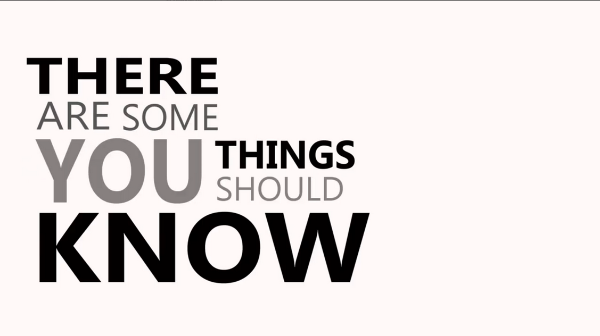
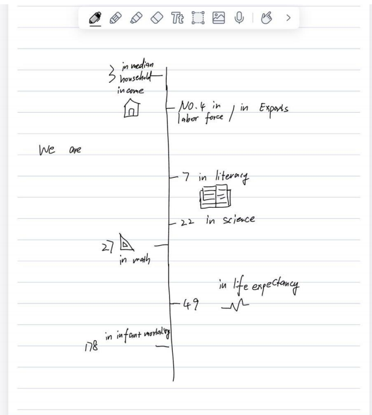
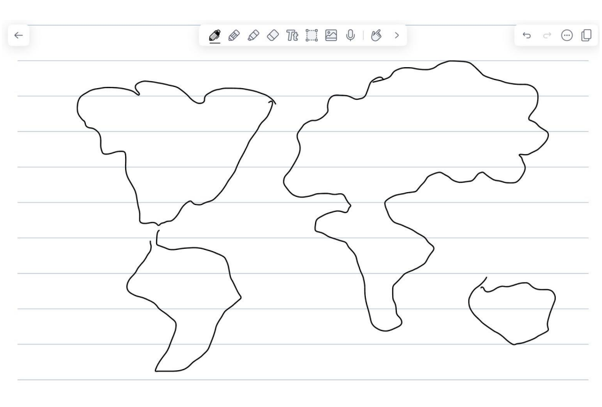
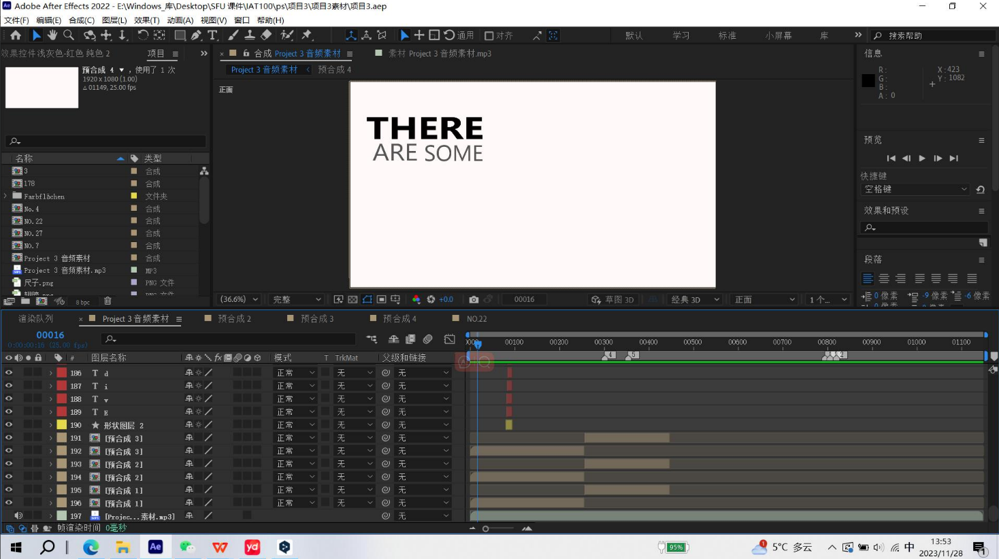
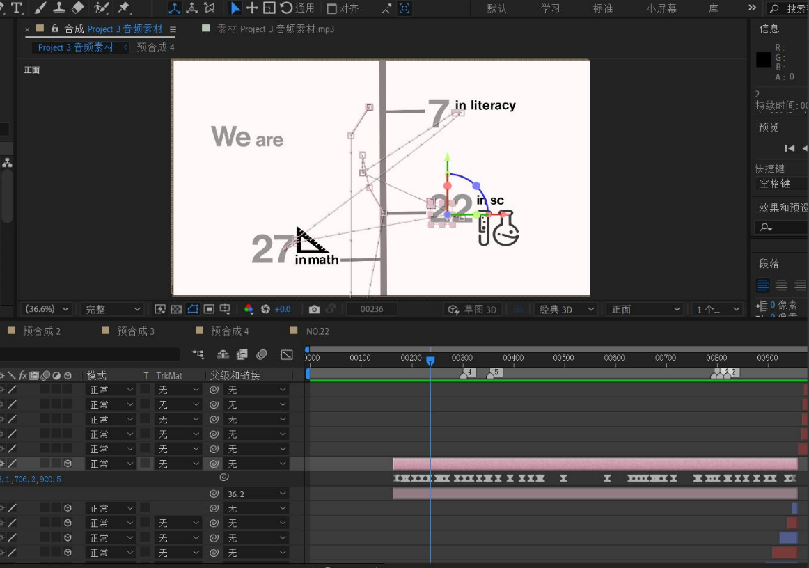

Kinetic Typography Animation
Animation • Motion Design

Overview
This project explores how typography and motion can be used together to express emotion and rhythm. The animation is based on a speech clip and focuses on timing, contrast, movement, and visual storytelling.
Tools
Adobe After Effects, Premiere Pro
Process
The project began with finding the audio. Since the speech contains many numbers and data points, I decided to use a timeline structure to present the information more clearly.

Because this is a typography animation, I wanted the motion itself to attract attention. I designed line animations that move along different paths and eventually form graphic shapes, helping guide the viewer’s focus.

After that, I matched the text to the audio and made each word appear in different ways. Some letters fade in, while others bounce or move into place, which adds variation and rhythm. I also used the camera in After Effects to create movement such as flipping the scene and moving along the timeline, which adds depth to the animation.
Several iterations were tested to refine timing, transitions, and readability. I adjusted the pacing multiple times to ensure the animation remained clear while still matching the fast speed of the audio.
Challenges
One of the biggest challenges was matching the speed of the audio. Because the speech is very fast, many words and letters needed to appear in a short time. This required creating multiple subtitle layers and carefully adjusting timing in the timeline.

Another challenge was learning how to use the camera in After Effects. I experimented with different movements to make the animation feel more dynamic, but controlling the camera, especially along specific axes, was difficult and required repeated testing.

Design Decisions
I used contrast in size, weight, and position to highlight key information. Line motion was used to connect elements and guide attention across the screen. A clean sans-serif typeface was chosen to improve readability and keep the overall design simple and clear.
Reflection
This project helped me understand how typography, motion, and camera movement work together in animation. I learned that small changes in timing and transitions can strongly affect how the audience experiences the work.
If I continue improving this project, I would refine the pacing further and simplify some sections to improve clarity. This project reflects my interest in motion design and my ability to combine visual storytelling with technical tools.